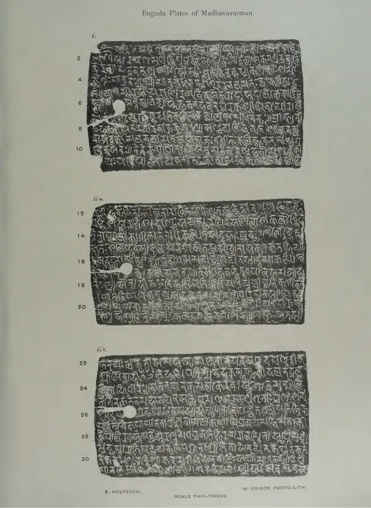
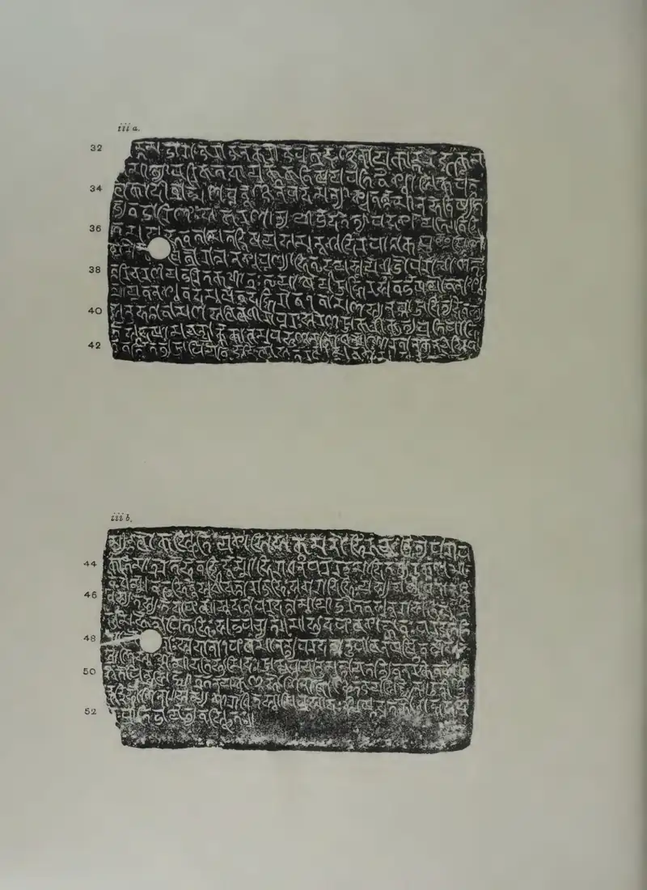

A note on the Buguda plates of Mādhavavarman
A NOTE ON THE BUGUDA PLATES OF MADHAVAVARMAN.
Wishing to publish the accompanying photo-lithograph of the Buguđa plates of Mádhavavarman, the text of which I have given above, Vol. III. p. 41 ff., Dr. Hultzsch has asked me to write a note on the alphabet of that inscription. In complying with his request, I take the opportunity of correcting one or two errors which I have allowed myself to commit eight years ago, and of adding a few remarks on certain expressions which occur in the formal part of Mádhavavarman's grant.
In my previous account I have represented the donor, Mádhavavarman, as a son of Sainyabhita. As pointed out by Dr. Hultzsch, above, Vol. VI. p. 144, note 1, the facts of the case are that Sainyabhita is a surname of Mádhavavarman himself, and that this Mádhavavarman Sainyabhita was a son of Yasôbhita. Moreover, a reconsideration of verse 11 of the inscription leads me to think that Mádhavavarman also had the biruda ſrinivâsa.— The name of the village granted I have stated to be Puipiṇa; I now see that the actual reading of the name, in line 36, is either Puípiṇô or, more probably, Púípiṇô. For the form of the initial í, here used, we may compare the sign for í in -ádhyáí, above, Vol. III. p. 342, l. 17, Plate.
In the passage enumerating the persons to whom the order is addressed, my text, in line 35, has vyavaháriṇáḥ sa[dhá]raṇán=, which I have proposed to alter to vyavaháriṇaḥ sádháraṇán=. I now see that the akshara in brackets should be read ka, the word intended being sa-karaṇán=. The terms vyavahárin and karaṇa occur together also in lines 14 and 15 of the Gumsúr plates of Nêtribhañja, Jour. Beng. As. Soc. Vol. VI. Plate xxxiii. (where the published text, ibid. p. 669, has bhyupadraviṇam and karaṇa); and karaṇa and vyávahárika we find together in the Gauhati plates of Indrapâlavarman, the Nowgong plates of Balavarman, and the Bargáon plates of Ratnapâlavarman (ibid. Vol. LXVI. Part I. p. 126, l. 7, and p. 291, l. 10, and Vol. LXVII. Part I. p. 111, l. 54).
The term saliladhárá-puraḥsarêṇa in line 40 I had proposed to alter to the grammatically correct °puraḥsaram. But whatever may be the rules of grammar, saliladhárá-puraḥsarêṇa
¹ Read -ſry-Uddharaṇa- (?).
² Read -Dhanamjaya-. Dhanarnjaya is the name of a Vyâsa.
³ Read matvá. ⁴ Read °vidhêytibhâya.
⁶ Here follow the eleven verses commencing Bhúmiñ yaḥ pratigrihnâti, ſañkham bhadr-ásanam, Sareán=êtán=bhávinaḥ, Bahubhir=vasudhá, Shashtiñ varsha-sahasráṇi, Na visham visham, Gám=ékám, Xán=íha dattáni, Vát-ábhra-vibhramam, Sva-dattán para-dattám vá, and Vári-hínêshv=aranyêshu.
⁶ Read támra-.
⁷ Originally káraṇika- was engraved.
⁸ Read °sréṇa asva°.
⁹ Read -ſriḥ.
Plate 1 is bound after this page.
Plate 2 is bound after this page.
turns out to be so well established a term that it should not be altered. We find it, sometimes spelt incorrectly, in the plates of the time of Šasáńkarája, above, Vol. VI. p. 145, l. 21; in one of the grants of Danđimahâdėvi, ibid. p. 142, l. 33; the Gañjám plates of Prithivivarmadėva, above, Vol. IV. p. 200, l. 19; the Kudopali plates of Mahâbhavagupta II, ibid. p. 259, l. 17; and the Puri plates in Jour. Beng. As. Soc. Vol. LXIV. Part I. p. 126. Instead of it, we have salila-dhárá-purahsaréna vidhinâ in the plates of Vidyâdharabhañja, ibid. Vol. LVI. Part I. p. 160, l. 6; dhárásalila-purahsaréna vidhinâ in the Gumsúr plates of Nêtribhañja, ibid. Vol. VI. p. 669; and udakapúrvéna in the Chicacole plates of Nandaprabhañjanavarman, Ind. Ant. Vol. XIII. p. 49, l. 4.
Like the expressions just now enumerated, the term akarikritya in line 40 of our grant seems to be peculiar to inscriptions from the Gañjám district and the countries adjacent to it, in which it occurs frequently. Instead of it we also find, in inscriptions from the same localities, akaratvéna, or, as in the Chicacole plates of Nandaprabhañjanavarman, simply akaram.
The term láñchhitam, which we have in line 50, also occurs in the plates of Nêtribhañja, the plates of Vidyâdharabhañja, and the plates of Prithivivarmadėva, all from the Gañjám district.
The characters employed in these plates are the same as those of e.g. the Gumsúr plates of Nêtribhañja, of which a rough lithograph is given in Jour. Beng. As. Soc. Vol. VI. Plate xxxiii.; the plates of Vidyâdharabhañja, of which there is a photo-lithograph ibid. Vol. LVI. Part I. Plate ix.; and the Gañjám plates of Prithivivarmadėva. They represent a variety of the northern alphabet which has developed out of the northern alphabet such as we find it in the [Gañjám] plates—below denoted simply by the letter Š.—of the time of Šasáńkarája of the Gupta year 300,1 published with a photo-lithograph above, Vol. VI. p. 144, and which I would call the Gañjám variety of the northern alphabet.
Of initial vowels the text contains a, á, i, í, and u. Of these, a and á are denoted by one and the same sign, which, as may be seen from a comparison with the sign for á in line 26 of Š., is really the sign for a only; see Ádityadévasya, l. 39, akarikritya, l. 40, api, l. 42, and ákshéptá, l. 49. The sign for i is nearly the same as that used in Š.; compare the i of iva in line 6 of the latter with the i of indôr= in line 1 of the present plates. The sign for i occurs only in Puípinó (or Púipinó), l. 36, and that for u e.g. in utkírnnam, l. 50.
Of the signs for medial vowels only á, u and ú call for remarks. In tá, ñchhá (the ñ of which does not really differ from the sign for n), and occasionally in ná, the á is denoted by a small hook, turned upwards and attached to the top of the consonant-sign; see jatáh, l. 4, váñchhá, l. 13, and charanáya, l. 38, and compare in Š. tatá, l. 6, guná, l. 14, and kanthá, l. 7. The sign for á used (exceptionally) in má at the end of line 25 may be compared with the sign for á in pá at the end of line 1 of Š.—For either of the vowels u and ú we have2 (similarly to what is the case in Š.) two signs; compare punđaríkah, l. 22, and kumbha, l. 23; múrtti, l. 7, and bhúmi, l. 18 (and with the last again compare bhúmi in lines 25 and 26 of Š.). There is a fifth sign, resembling the ordinary sign for ú in Š., which is employed by the writer of the present
1 The inscription is dated in the Gupta year 300, and the grant recorded in it was made at an eclipse of the sun. During the time which could correspond to a Gupta year 300 there was no solar eclipse which was visible in the Gañjám district. The two solar eclipses nearest to that time which were visible in the Gañjám district were one of the 4th November A.D. 617, and one of the 2nd September A.D. 620.—Perhaps I may state here that in line 22 of the same inscription, in the place of the corrupt akshayaniyé, we must in my opinion read akshayanivyá. The term akshayanivi occurs also (corrupt) in one of the [Gañjám] grants of Danđimahâdėvi, above, Vol. VI. p. 139, l. 34.
2 I have disregarded in the above the exceptional denotation of u and ú after r, e.g. in gurur=, l. 4, and prarúdhó, l. 20; compare in Š. chaturudadhi-, l. 1.—In line 19 of the present plates the writer has really written mumúdé, not mumudé.
plates for both u and û; compare durlla- at the end of line 23, dûtakô, l. 51, puraḥsarêna, l. 40, and pûrva, l. 34.
Of the consonants, jh and b do not occur in the text, and the signs for chh and th— the latter hardly to be distinguished from the sign for t—occur only as subscript letters. In general, it may suffice to draw the reader's attention to the forms of kh, e.g. in khyâtaḥ, l. 9; g and ñ in Gaṅgâ, l. 3; s in sâsvata, l. 12; gh in vighatṭi, l. 19; ch in chandraḥ and j in jalêshu, l. 17; th in slathâ, l. 3; dh and v in pravôdha, l. 16; ph in phala, l. 48; bh and h1 in mahêbhakumbha, l. 23, and graha, l. 26; l in kômaladalâyatalô, l. 9; and s in sañchaya, l. 8.
The signs for t and ṭt are those which we find generally used in inscriptions from Eastern India; compare paṭunâ, l. 29, shatpada, l. 22, pâṭtaka, l. 36, and bhatṭa, l. 40.
For the form of the single n see e.g. phaṇa, l. 2, and guṇinâ, l. 10. When in Š. n or ñ form the first part of a conjunct, two distinctly different signs are used to denote the two nasals; compare in Š. maṇdana, l. 14, and sañchhannô, l. 6. In the present plates the signs for n and ñ as first parts of conjuncts differ very slightly, if at all, and one sign only is used to denote the same two nasals as last parts of conjuncts; compare maṇdalam, l. 10, sañchaya, l. 8, vâñchhâ, l. 13, lâñchhitam, l. 50, krishṇâ, l. 8, and yajñais, l. 28. One sign only is used in the present plates also for the subscript chh and th,2 just as the plates of the time of Šaśânkarâja use one sign for the same two letters; compare in Š. sañchhannô, l. 6, and ssthityu, l. 16, and in the present plates vâñchhâ, l. 13, and sthalâ, l. 23.
When r precedes another consonant, it is always, as in the modern Nâgarî, denoted by a superscript sign; but, excepting in the conjunct ry, the letter y, when it follows upon another consonant, is everywhere denoted by the secondary form of the letter y which in the same position is used throughout (even in ry) in Š. So it happens that the signs for such aksharas as tya, nya, shya, sya of the present plates differ very little from the corresponding signs of Š.
The sign of avagraha is not used in these plates; nor do we find in them the sign of virâma, except perhaps in the final form of k, used in the word samyak at the commencement of line 43. Of other special signs for final consonants the plates contain one for t, in asakrit, l. 15, kamalâkaravat, l. 24, Àngirôvat, l. 39, and svadânât, l. 48, and one for n, in gari(rî)yân, l. 18.
To determine with confidence the exact time of these plates from the characters seems to me impossible; my impression is that they cannot be earlier than about the 10th century A.D. and that probably they are not much later.
1 In line 25 the writer has really written mabôdayêna, not mahôdayêna.
2 In tênêththaâm (for tênêththaâm), l. 10, the writer or engraver has used the subscript sign for tâ also for the first th. For the sva of sva-gôtram, l. 24, he had originally put stha, but the back of the paper-impression seems to shew that this stha has been altered to sva.

